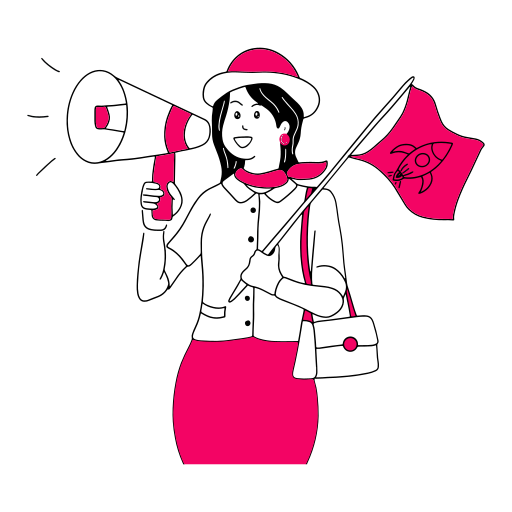

Resource download tool, BT magnetic force, multithreading, etc. - little flying rabbit Download
windows
- ThunderAlthough Xunlei has some advantages, its download status in China is still difficult to shake
- Flying rabbit DownloadIt is a whole station download tool. Enter the website to download with one click. The operation is simple and easy to use, multi-threaded tasks
- QdownSupport thunderbolt link, flux, BT, FTP, SFTP, HTTP and HTTPS download protocols
- qBittorrentEnhanced QT toolset based μ Torrent open source alternative
- BitCometA free BT / HTTP / ftp download software, powerful and fast
- μ TorrentCompact, powerful, full-featured BT magnetic Downloader
- MotrixSupport downloading HTTP, FTP, BitTorrent, magnet, Baidu network disk, etc
- Heike DownloaderFast Video Parsing, online playback and offline resources
- Tixati100% free, easy to use BitTorrent client, transmission MAC open source, fully encrypted, DHT, μ TP, PEX and magnet link support
- uGetLightweight multifunctional Downloader, supporting all common protocols including BT, and compatible with curl and aria2
- magnetWOpen source magnetic link search integration system
- HTTrack Website CopierIs a free and easy-to-use offline browsing tool (browser), which allows you to download the entire www website to the local directory, and get HTML, pictures and other files by traversing the website directory
- Teleport UltraOne click download all kinds of data on the web page, including text, pictures and flash animation
- TransmissionMac open source, fully encrypted, DHT, μ TP, PEX and magnet link support
Mobile software
- IDM+ADM Pro multi-threaded download, please go to ku'an comment area for use and discussion
- Lightning DownloadFree magnetic link, hash, thunder, ed2k and other videos can be downloaded and played online
- Domain · DownloaderSupport magnetic download and domestic mainstream short video download.
- Just love to see magnetismSupport magnetic download and domestic mainstream short video download.
- New flash cloudSupport magnetic download and domestic mainstream short video download.
- Rocket BT downloadEfficient and simple download tool supports links such as magnetic force, seed, electric donkey, thunder, etc
- Lightning DownloadSupport online cloud broadcasting, unlimited download, magnetic search and other resource link downloads.
- Kangaroo DownloadSupport magnetic seed, electric donkey, thunder link, cloud second broadcast, online viewing, projection and double speed playback
- Resource cat / mouseBuilt in resource search function, search content can speed up download
- Wukong searchProfessional magnetic file search engine
- Python DownloadSpeed magnetic download software
- Magic magnetic forceAggregate film and television magnetic search download
- Black and white shark magnetic forceFour film and television related search software
- Unitary DownloadMulti thread download tool software, supporting magnetic force, torrent, HTTP and FTP protocols.
- Bit cicadaAn aggregate magnetic search software. Support the search of books, music, videos and various documents
- NDMFree Compact features comparable to IDM's new star download tool
- xdown torrentProfessional file download and sharing tools
Multithreaded Download
- IDMThe most powerful and effective download accelerator, does not support BT magnetic force
- NDM 免费小巧功能比肩IDM的新星下载工具
- XdownFree ad free IDM / torrent synthesis
- FDMFree powerful download acceleration manager, supporting http / HTTPS / ftp / seed and other protocols
- EagleGetFree universal download manager, supporting HTTP (s) FTP MMS RTSP protocol
- XDMThe download speed is increased to 500%, and the video download of major video websites is detected
- AriaNgA modern web front end that makes aria2 easier to use
- ADMDownload Audio, video and other content on the browser at top speed
- MiponyDownload tools for batch testing and downloading common network disk resources abroad (and some domestic, such as rayfile and 115)
- persepolisA download manager developed by python, the GUI version of aria2
Related articles
